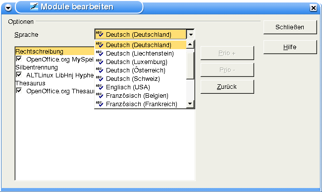

Rechtschreibprüfung, Silbentrennung und ThesaurusAktivieren der WörterbücherWenn Sie mit einer älteren Version als OpenOffice.org 1.1 arbeiten, müssen Sie nach der Installation noch die Wörterbücher aktivieren. Klicken Sie in der Menüleiste von OpenOffice.org auf -> Extras
-> Optionen -> Spracheinstellungen -> Linguistik. Klicken Sie hier auf auf den oberen Bearbeiten... - Button, der sich rechts von der Auswahlliste der Verfügbaren Sprachmodule befindet. Daraufhin öffnet sich das Fenster Module bearbeiten (hier mit den eben installierten Sprachen): Wählen Sie jetzt in der Auswahlliste Sprache die gewünschte Sprache. In diesem Fall habe ich Deutsch (Deutschland) ausgewählt. Nachdem die Sprache ausgewählt wurde, sind als Nächstes die Module zu aktivieren. Klicken Sie nacheinander auf
Jetzt muss sich links vor den Modulen wie in der Abbildung oben ein Häkchen befinden. Hinweis: Beachten Sie bitte, dass die Auswahlmöglichkeit der Sprachmodule auch von der Verfügbarkeit und der Unterstützung durch die verwendete OpenOffice.org-Version abhängig ist. Nachdem alles aktiviert wurde, verlassen Sie das Fenster über den Schließen-Button. Hinweis: Wenn Sie Module anderer Sprachen zusätzlich aktivieren wollen, wiederholen Sie die oben genannten Schritte analog für jede zusätzliche Sprache. Standardsprache der Dokumente einstellenIn dem Ihnen bereits bekannten Fenster Optionen - Spracheinstellungen - Linguistik
klicken Sie nun auf: Hier wählen Sie unter Standardsprache der Dokumente aus der Auswahlliste die von Ihnen gewünschte Sprache aus und schließen das Fenster über den OK-Button. Das war's! Ihre Wörterbücher sind registriert und bereit zur Verwendung in OpenOffice.org. |
|